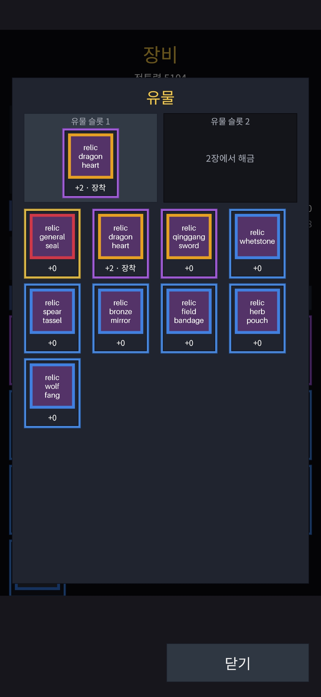
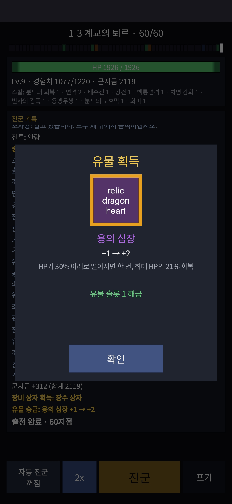

작업 목표
조자룡에게는 체력이 30% 아래로 떨어지면 한 번 회복하는 ‘용의 심장’이라는 고유 특성이 있었다. 장수 정의에 박혀 있는 이 특성을 플레이어가 모으고 장착하는 콘텐츠로 꺼내는 것이 출발점이었다. 그러려면 장비와는 다른 아이템 종류, 뽑기와 중복 처리 규칙, 전투에 들어가는 경로, 그리고 수익 모델까지 함께 정해야 했다.
작업 결과
유물 24종(희귀 12 · 전설 8 · 신화 4)과 승급 단계별 효과 96개를 데이터로 만들고, 유물 상자 · 승급 · 환급 · 전리품 지급 · 장착 화면 · 확률 공개까지 서버와 클라이언트에 붙였다. 개발 서버에 배포하고 Galaxy A16에서 전 항목을 확인한 뒤 병합했다.


유물마다 +0부터 +3까지 네 단계의 효과 행을 따로 두었다. 전투 엔진은 그대로다.
유물은 이미 있는 효과 어휘(발동 시점 · 동작 · 수치)의 조합이라 전투 계산 코드는 손대지 않았다.
커밋마다 깨끗한 작업 트리에서 빌드 · 테스트 1,580개 · Unity 에디터 테스트 328개를 통과시켰다.
오전 기획, 오후 조사와 계획, 밤에 구현 · 배포 · 실기기 확인, 새벽에 병합.
유물의 규칙: 레벨 대신 승급, 상한 뒤엔 환급
장비는 강화 · 합성 · 돌파로 키우는 스탯 아이템이다. 유물은 그 어느 것도 하지 않는다. 종류마다 하나만 가질 수 있고, 성장은 오직 같은 유물을 다시 얻었을 때의 승급뿐이다.
효과만 있는 장착 아이템
체력 · 공격 · 방어 같은 스탯이 없다. “전투 시작 시 공격력 +6%”, “적을 쓰러뜨리면 5% 회복”처럼 전투 효과 한두 개를 가진다. 출정을 시작할 때 장착한 유물이 런 전체에 적용된다.
중복 → 승급 +0 ~ +3
뽑기에서 이미 가진 유물이 나오면 한 단계 승급한다. 단계마다 수치가 오르는데, 확률로 발동하는 유물은 수치 대신 발동 확률이 오른다. 승급마다 반드시 더 강해지도록 데이터 검사 규칙을 두었다.
+3 중복 → 재화 환급
+3인 유물이 또 나오면 등급에 따라 군자금 · 돌파석 · 보옥으로 돌려준다. 원신이나 FGO처럼 플레이어가 이미 아는 방식이라 설명이 필요 없고, 확률 공개 화면에도 한 줄이면 된다.
어디서 얻나
- 전리품: 1장 마지막 스테이지(1-3)를 처음 깨면 ‘용의 심장’을 상자 없이 바로 준다. 승리 버튼 뒤에 별도 팝업이 뜨고, 같은 순간 유물 슬롯 1이 열린다.
- 유물 상자: 1-3을 깬 플레이어에게만 상점에서 판다. 등급을 먼저 뽑고(희귀 60% · 전설 32% · 신화 8%), 그 등급 안에서 균등하게 하나를 뽑는다.
- 적 장수도 든다: 장수 데이터에 유물 칸을 두어, 2장 이후 조조의 청강검이나 관우의 적토마 같은 물건을 적이 들고 나올 수 있게 했다. 이번 버전에서는 자리만 만들었다.
왜 유료 상자로 팔기로 했나
이 게임은 지금까지 “보옥으로 사는 것은 전부 확정 상품”이라는 원칙이었다. 하지만 보상형 광고와 확정 상품만으로 목표 매출에 닿으려면 1인 개발 신작이 도달하기 어려운 일일 활성 사용자가 필요하다. 장르 매출의 대부분은 반복 뽑기에서 나온다.
그래서 원칙을 바꾸되 가장 작게 바꿨다. 상자 1종, 고정 가격, 환급 규칙 고정, 판매 이벤트 없음. 열쇠 같은 중간 재화도 두지 않았다. 한국 · 일본 모두 뽑기 규칙을 바꾸면 사전 고지가 필요하므로, 처음 공개한 규칙으로 오래 갈 형태를 골랐다.
전투 엔진은 그대로, 데이터만 늘렸다
이 게임의 전투는 서버와 클라이언트가 같은 정수 연산 코드로 돌리는 결정적 시뮬레이션이다. 스킬과 장수 특성은 모두 ‘효과 행’의 목록이고, 엔진은 효과가 어디서 왔는지 모른다. 유물도 그 목록에 효과 행을 더 얹는 것으로 끝냈다.
유물 정의
전투 테이블에 유물 24행. 승급 단계마다 효과 행 id를 가리킨다. 적 장수도 참조해야 해서 전투 테이블에 두었다.
출정 시작 스냅샷
서버가 장착 유물의 현재 승급 효과 id를 런 상태에 기록한다. 런 도중 장착을 바꿔도 그 런에는 영향이 없다.
효과 합성 순서
시작 스탯 → 런 보정 → 장수 특성 → 유물 → 스킬. 순서를 고정해야 서버와 클라이언트의 결과가 같다.
계정 테이블
가격, 환급량, 전투력 수치는 계정 테이블에. 가격을 바꿔도 전투 로그 해시가 바뀌지 않게 분리했다.
승급을 효과 행 네 개로 푼 이유
“+1마다 수치 ×1.2”를 런 시작 시 계산해 엔진에 넘기는 방법도 있었다. 그러면 전투 입력 형식과 골든 벡터, 클라이언트 전투 코드가 모두 바뀐다. 효과 행 네 개는 데이터만 늘고, 로더 테스트로 누락을 잡을 수 있다. 100종 × 4단계 = 400행은 CSV로 충분히 관리된다.
유물 테이블을 전투 쪽에 둔 이유
처음 설계는 계정 테이블에 두는 것이었는데, 적 장수가 유물을 들려면 장수 테이블(전투 쪽)이 유물을 가리켜야 한다. 전투 라이브러리는 아무것도 참조하지 않는다는 규칙이 있어서 유물 정의를 전투 테이블로 옮겼고, 덕분에 “계정 로더가 전투 테이블을 참조”해야 하는 역방향 의존도 사라졌다.
코드를 쓰기 전 읽기 전용 조사에서 찾은 함정 일곱 개
기획서를 넘기고 바로 구현하지 않았다. 먼저 AI 에이전트에게 저장소를 읽기만 하게 해 기획이 코드와 어긋나는 곳을 찾게 했다. 10개 질문에 918줄의 조사 보고서가 돌아왔고, 그중 일곱 개는 계획을 바꿨다.
저장 형식이 바뀌면 진행 중인 런이 무한 루프에 빠진다
Critical옛 형식의 런을 이어 가려 하면 서버가 ‘지원하지 않음’을 답하지만 런을 끝내지는 않았다. 클라이언트는 종료 안내를 띄우고 로비로 가는데, 런이 남아 있으니 출정을 누르면 다시 같은 답. 서버가 읽을 수 없는 런을 그 자리에서 종료하도록 고쳐 같은 배포에 넣었다.
가방은 상자를 세 종류까지만 그렸다
Client유물 상자는 네 번째 종류라 보이지 않았을 것이다. 상자 행을 가로 스크롤로 바꿨다.
런 응답이 군자금 지급을 버리고 있었다
Server환급으로 군자금이 들어와도 화면에 안 보이고 지갑도 갱신되지 않았을 것이다. 지갑 변동이 있으면 항상 다시 읽도록 했다.
첫 클리어 보상이 ‘클리어 횟수’를 올리기 전에 지급됐다
Order슬롯 해금은 클리어 횟수로 판정하므로 그대로면 용의 심장이 슬롯에 들어가지 않고 가방에 떨어진다. 지급 순서를 바꿨다.
“장착 안 됨 = 슬롯 0”은 유니크 인덱스와 충돌한다
DBMariaDB는 NULL만 중복을 허용한다. 장착 슬롯 컬럼을 nullable로 설계했다.
상점 로더는 모르는 상품 종류를 조용히 ‘선택권’으로 취급했다
Loader상자를 파는 새 종류를 더하면서, 모르는 종류는 로드 실패로 바꿨다. 노출 조건도 하드코딩 대신 행마다 “어느 스테이지를 깬 뒤”로 두어 다음 상품이 데이터만으로 들어가게 했다.
슬롯 해금 테이블은 전투 쪽에 둘 수 없다
Table해금 조건이 스테이지인데 전투 라이브러리는 스테이지를 모른다. 런 테이블로 옮겨, 슬롯을 바꿔도 전투 벡터 108개가 다시 생성되지 않게 했다.
개발 서버 배포와 실기기 세션
구현은 여덟 그룹, 18개 커밋으로 나눠 AI 에이전트가 자리 비운 사이에 진행했다. 배포와 실기기 확인은 사람이 한 단계씩 했다.
저장 형식 변경을 실기기로 증명한 방법
- 배포 전, 옛 앱으로 출정을 시작해 탭을 기다리는 화면에서 앱을 껐다. 서버에 옛 형식의 런이 남는다.
- 이미지 빌드 → 마이그레이션 1개 적용 → 최소 지원 버전 1.3.0 반영. 플레이어 초기화는 하지 않았다.
- 옛 앱을 열자 업데이트 화면. 새 앱을 덮어 설치하고 로그인하자 옛 런은 조용히 종료되고 새 출정이 열렸다.
- 서버 로그에 종료 경고 1건, 런 이력 테이블에 ‘포기’ 행 1개.
세션에서 확인한 것
- 1-3을 깨기 전: 상점에 유물 상자 없음, 슬롯 두 개 잠김
- 1-3 첫 클리어: 용의 심장이 슬롯 1에 장착, 상점에 유물 상자 등장
- 유물 상자 구매 · 열기, 디버그로 10개 열어 승급 카드 확인
- 모든 유물을 +3으로 올린 뒤 열어 등급별 환급과 지갑 증가 확인
- 해제 · 재장착 뒤 다음 런의 전투 로그에 유물 발동(옥룡패)
- 확률 공개 화면의 유물 상자 탭과 환급 안내 줄
알게 된 것
승급 수치는 공식이 아니라 값으로
“×1.2 내림” 규칙을 작은 수치에 적용하면 2 → 2 → 2 → 3처럼 승급해도 변화가 없는 단계가 생긴다. 유료 상자에서 +1이 아무것도 아니면 플레이어가 바로 알아차린다. 승급마다 반드시 더 강해야 한다는 로더 규칙을 두고, 걸린 유물 세 개는 값을 직접 정했다.
테스트한 빌드와 병합 코드는 같아야 한다
세션 뒤 환급 카드에 유물 이름이 없는 것을 발견했다. 작은 수정이지만 넣으면 폰에서 본 빌드와 병합 코드가 달라진다. 다음 파트의 첫 항목으로 넘기고 병합했다.
첫 클리어 재확인에 새 계정은 필요 없다
스테이지 진행 기록과 유물 행을 데이터베이스에서 지우면 같은 계정으로 첫 클리어를 다시 만들 수 있다. 디버그 버튼(서버 변경 · 재배포 필요)보다 SQL 두 줄이 쌌다.
동결한 id는 남기고 새 행을 쓴다
용의 심장의 옛 효과 행은 저장된 전투 로그가 번호로 참조한다. 장수에서 떼어 내되 행 자체는 남기고, 유물은 새 번호 블록에 네 행을 두었다.
스크래치 작업 트리가 디스크를 채운다
커밋마다 깨끗한 트리에서 검증하다 보니 작업 트리와 테스트용 DB 볼륨이 쌓여 디스크가 찼고 Docker가 읽기 전용으로 빠졌다. 검증이 끝난 트리는 바로 지우고, 77 GB의 볼륨을 정리했다.
보고서는 파일로만
AI 에이전트가 긴 보고서를 콘솔에도 찍고 있었다. 파일을 열어 복사하는 흐름이라 콘솔 출력은 토큰만 쓴다. 파일 경로와 결과 한 줄만 찍도록 규칙을 바꿨다.
기획은 대화로, 조사와 구현은 에이전트가, 확인은 기기로
이번 파트는 기획 대화 → 읽기 전용 조사 → 계획 → 승인 → 구현 → 배포 → 실기기 → 병합의 순서로 하루 만에 끝났다. 사람이 자리를 비운 사이 구현이 진행됐고, 돌아와서는 보고서 파일을 열어 다음 단계로 넘겼다.
AI 에이전트가 맡은 일
- 병렬 하위 에이전트 네 개로 저장소 조사, 918줄 보고서
- 구현 계획과 커밋 그룹 분할, 열린 질문 정리
- 테이블 · 효과 행 96개 · 로더 규칙 · 마이그레이션 · 계약 · 화면
- 커밋마다 깨끗한 트리 검증, Unity 배치 테스트, APK 빌드
- 1,000계정 시뮬레이션 재측정
- 개발 서버 스모크, PR 생성과 CI 확인
사람이 직접 한 일
- 유물의 규칙과 수익 모델 결정, 조사 보고서의 열린 질문에 답
- 옛 형식 런을 남겨 두고 배포, 명령을 한 단계씩 실행
- Galaxy A16 세션 전 항목 확인, 팝업 미표시 보고
- 데이터베이스에서 첫 클리어 되돌리기
- push와 병합
정리 및 결론
이번 파트의 진행 순서
유물 기획 (5차 개정)
↓
읽기 전용 조사 → 함정 7개
↓
계획 · 승인 (열린 질문 7개는 추천대로)
↓
구현 18커밋 (자리 비운 사이)
↓
개발 서버 배포 · 옛 런 종료 증명
↓
실기기 세션 · 병합유물은 이 게임에서 처음으로 ‘돈을 받는 랜덤’이다. 그래서 규칙을 가장 단순하고 오래 갈 형태로 두는 데 시간을 썼고, 구현은 엔진을 건드리지 않는 데이터 작업으로 끝냈다.
고유 특성을 유물로 옮겨도 첫 장의 난이도는 변하지 않았다. 1-3 이후는 용의 심장을 얻으므로 이전과 같다.
3줄 요약
- 「조자룡이 간다!」에 효과만 가진 장착 아이템 ‘유물’을 넣었다. 중복은 +3까지 승급, 그 뒤는 등급별 환급이며, 주인공의 고유 특성을 유물로 옮겨 1장 클리어 보상으로 준다.
- 전투 엔진은 바꾸지 않고 효과 행 96개와 테이블로 만들었고, 런 저장 형식을 올리면서 진행 중인 런이 갇히는 문제를 조사 단계에서 찾아 같은 배포에 고쳤다.
- 유물 상자를 첫 유료 랜덤 상품으로 정하되 상자 1종 · 고정 가격 · 이벤트 없음으로 운영 부담을 묶었다. 18커밋, 테스트 1,580개, 실기기 세션을 거쳐 하루 만에 병합했다.
다음 작업
본편과 순찰로 런 모드 분리
Part S스토리 스테이지는 한 번만, 그 사이에 반복 파밍용 순찰 스테이지를 둔다. 무료 상자는 양으로, 유료 상자는 질로 나누고 유료 장비 상자를 추가한다.
계급 성장 재조정
Part T계급 단계를 늘리고 체력 · 공격 · 방어를 골라 올리는 방식으로 바꿔, 군자금으로 꾸준히 강해지는 축을 주축으로 만든다.
2 · 3장과 출시 준비
Part F적 장수의 유물(청강검 · 적토마), 전리품 배치, 유물 아트, 일본어 · 영어 텍스트, 스토어 설정과 스테이징 서버.